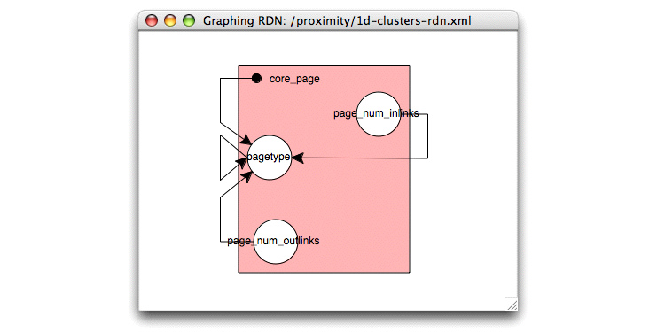

Proximity provides an RDN viewer to graphically illustrate the dependencies in the RDN. The figure below shows an artificial RDN constructed to illustrate its components.
 |
This RDN describes the probabilistic dependencies between attributes of movies and actors. Each plate corresponds to an object type, circles represent attributes on those types, and arrows indicate probabilistic dependencies among these attributes.
In the example above, movie genre depends on movie success (represented by the isOWBlockbuster attribute, which indicates whether the movie is an opening weekend blockbuster). That is, if we know whether a movie grossed over two million dollars in its opening weekend, we are better able to predict its genre. (Strictly speaking, the conditional probability distribution for genre includes movie success.) Similarly, predicting genre also depends on whether the movie’s actors have won any awards. In this case, the arrow points in both directions indicating that predicting whether a movie’s actors have won any awards depends on genre, as well.
The loop leaving and re-entering the movie plate connecting isOWBlockbuster to itself indicates autocorrelation. The success of a movie can be predicted more accurately if we know the success of other movies that link directly or indirectly to the target object. In this case, we link indirectly through studio objects—if other movies made by the same studio are successful, we are more likely to predict that the current movie will have a big opening weekend. Because RPTs do not represent these intermediate objects, the RDN viewer does not show these connecting studio objects.
The arrow from the large dot on the actor plate to movie genre indicates that genre also depends on the degree of related actor objects (how many actors are linked to this movie in the database). Linking to the dot indicates that this dependency involves a graph feature (degree) rather than one based on attribute values.
To view an RDN, you must construct an RDN “wrapper” file that lists the RPTs that were used by the RDN and identifies different labels (from these RPTs) that refer to the same object class. The example below shows such a wrapper file for the RDN created in Exercise 7.4.
<!DOCTYPE rdn SYSTEM "rdn.dtd">
<rdn>
<rpt-files>
<file>ProxWebKB_RPTforRDN.xml</file>
</rpt-files>
<item-maps>
<map>
<from>core_page</from>
<to>linked_to_page</to>
</map>
<map>
<from>core_page</from>
<to>linked_from_page</to>
</map>
</item-maps>
</rdn>
The <rpt-files> element lists the
component RPTs, each enclosed by
<file> tags. Our RDN uses only a
single RPT, ProxWebKB_RPTforRDN.xml.
The <item-map> section
contains a sequence of <map>
elements. Each <map> element
contains a pair of <item> names from
the RPT, where both names refer to the same type of object in the
database. In this example, all database objects are web pages, so we
map all the object labels to core_object. The name in
the <from> element is used to label
the corresponding plate in the RDN viewer.
Exercise 7.5. Viewing relational dependency network graphs:
This script requires entities created in Exercise 7.4. You must have completed this exercise before running the script in the current exercise.
Before beginning, make sure that you are serving the ProxWebKB database using Mserver. Start the Proximity Database Browser if it is not already running.
-
All files required for viewing the RDN must be in the same directory. If you have not already done so, copy
rpt2.dtdandrdn.dtdto the directory containing the saved RPT XML file,ProxWebKB_RPTforRDN.xml.>
cp $PROX_HOME/resources/rpt2.dtd $PROX_HOME>cp $PROX_HOME/resources/rdn.dtd $PROX_HOMEProximity requires that
rpt2.dtdbe in the same directory as the component RPT XML files and thatrdn.dtdbe in the same directory as the RDN wrapper file. -
Copy the RDN wrapper file to the same directory.
>
cp $PROX_HOME/doc/user/tutorial/examples/1d-clusters-rdn.xml $PROX_HOME -
From the Model menu, choose Graph RDN. Proximity displays the Open dialog.
-
Navigate to the directory containing the RDN files (
$PROX_HOMEif you are following the tutorial) and choose1d-clusters-rdn.xml. Click Open.Proximity opens a window showing a graph of the RDN learned for this data.
 You may need to drag some of the RDN elements to see the overlapping lines more clearly.
The RDN for the ProxWebKB data shows the probabilistic dependencies used to predict the value of a page’s pagetype attribute. Specifically, the value of a page’s pagetype attribute depends on the the known values of page_num_inlinks and page_num_outlinks for related pages and the inferred value of pagetype for related pages. The link from the core_page dot in the upper left corner to the pagetype attribute indicates that pagetype is also dependent on structural features (i.e., the degree) of neighboring pages. All of the links in the RDN graph leave and re-enter the core_page plate, indicating that we use the attributes of related pages to predict the value of pagetype, rather than the attributes of the target page itself.